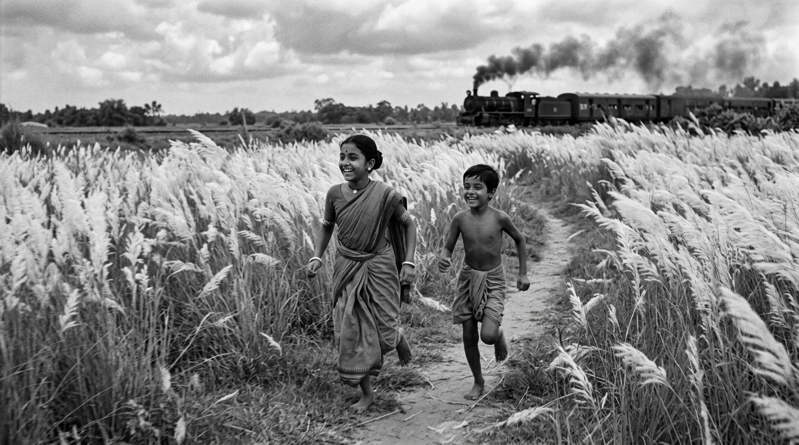
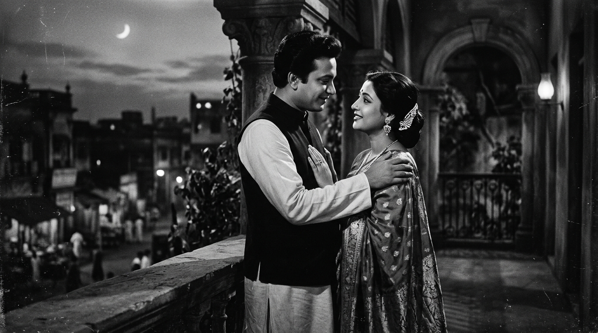

Bengali Cinema Explorer
Delve into the poetic and socially conscious world of Bengali Cinema. From pioneering studio musicals at New Theatres to the legendary Parallel Cinema of Satyajit Ray, Mrinal Sen, and Ritwik Ghatak, discover Tollywood's enduring global legacy.
Artistic Expression and Social Realism
Bengali cinema, centered in Tollygunge, Kolkata, has long been regarded as the intellectual cradle of Indian filmmaking. The industry traces its roots to silent pioneer Hiralal Sen and the release of Billwamangal in 1919 by Madan Theatre. The introduction of sound in 1931 with Jamai Sasthi, followed by the legendary New Theatres studio, established early musical and literary standards.
In the post-independence era, Bengali cinema witnessed a golden age with the rise of the **Parallel Cinema** movement. Satyajit Ray, Ritwik Ghatak, and Mrinal Sen bypassed typical Bollywood escapism, offering realistic, socially engaged stories. Concurrently, commercial cinema thrived under the legendary romantic duo of Uttam Kumar and Suchitra Sen. Today, directors continue this legacy through literary adaptations, urban relationship dramas, and global crossover success.
🎨 At a Glance
- Language: Bengali — Scheduled Language (Eighth Schedule).
- Primary Hub: Tollygunge (Kolkata), West Bengal.
- Pioneering Studio: New Theatres, Madan Theatre.
- Key Movement: Parallel Cinema (Indian New Wave).
- Acting Legends: Uttam Kumar, Suchitra Sen, Soumitra Chatterjee, Madhabi Mukherjee.
Landmark Masterpieces
A curated selection of films that defined the cinematic style, social commentary, and international acclaim of Bengali cinema.
Pather Panchali (1955)
Satyajit Ray's lyrical debut about rural boyhood in Bengal. It won Best Human Document at Cannes and revolutionized Indian parallel cinema.
Kabuliwala (1957)
Directed by Tapan Sinha, this deeply moving adaptation of Rabindranath Tagore's classic short story depicts the parental affection of an Afghan trader.
Jalsaghar (1958)
Ray's brilliant character study of a decaying zamindar's pride, featuring classical musical scores by legendary Indian classical masters.
Meghe Dhaka Tara (1960)
Ritwik Ghatak's intense portrayal of post-partition refugee struggles in Calcutta, using partition as a metaphor for personal sacrifice.
Nayak (The Hero) (1966)
Satyajit Ray's psychological drama exploring the fears and isolation of an acting superstar, starring the legendary Uttam Kumar.
Bhuvan Shome (1969)
Mrinal Sen's satirical comedy that challenged traditional conventions, widely credited with launching the Indian New Wave.
Legendary Directors
Explore the lives and visions of the internationally acclaimed auteurs who established Bengali cinema's artistic identity.
Satyajit Ray
Auteur: Academy Honorary Award recipient. Master of detail, music, and screenwriting, he put Indian cinema on the global stage with the Apu Trilogy.
Ritwik Ghatak
Avant-Garde Icon: Celebrated for his powerful political dramas and experimental soundscapes, capturing the tragedy of partition and social displacement.
Mrinal Sen
New Wave Pioneer: Directed Bhuvan Shome and the Calcutta Trilogy, known for using unconventional techniques to critique societal inequality.
Tapan Sinha
Humanist Master: Balancing commercial cinema with artistic integrity, his films are renowned for their literary adaptations and strong humanism.
Milestones & Eras
Follow the timeline of Bengali cinema — from its silent pioneers through the golden age of realism to its digital resurgence.
Silent Era & Madan Theatre
Hiralal Sen establishes early film recording. The Madan Theatre corporation releases Billwamangal (1919), establishing the theatrical basis of Bengali cinema.
Early Talkies & New Theatres
Kolkata transitions to sound with Jamai Sasthi (1931). The New Theatres studio emerges, producing classics, introducing playback singing, and establishing literary drama.
The Golden Age & Parallel Cinema
Satyajit Ray releases Pather Panchali (1955). This era witnesses a renaissance of realism and art-house cinema alongside the stardom of Uttam Kumar and Suchitra Sen.
Middle Cinema & Politics
Bengali cinema responds to the Naxalite movement and urban conflicts (Calcutta Trilogy). Tarun Majumdar and Buddhadeb Dasgupta balance commercial and art-house aesthetics.
Literary Resurgence & Modern Crossover
Rituparno Ghosh revives literary, sensitive relationship dramas. Contemporary filmmakers utilize digital formats to address global diaspora audiences.
Cinematic Highlights
Illustrative representations of key aesthetic details and memorable moments in Bengali cinema.


📚 References & Further Reading
- Ray, Satyajit (Orient Blackswan). Our Films, Their Films — An essential collection of film essays and criticism by the auteur.
- National Film Archive of India (NFAI), Pune. Regional Heritage Catalog: Bengali Cinema Records.
- New Theatres Studio archives (Kolkata). Early Sound Recording and Playback Systems in Indian Cinema.
- University of Calcutta (Department of Film Studies). Research papers on the Parallel Cinema Movement and the Indian New Wave (1960s-1970s).